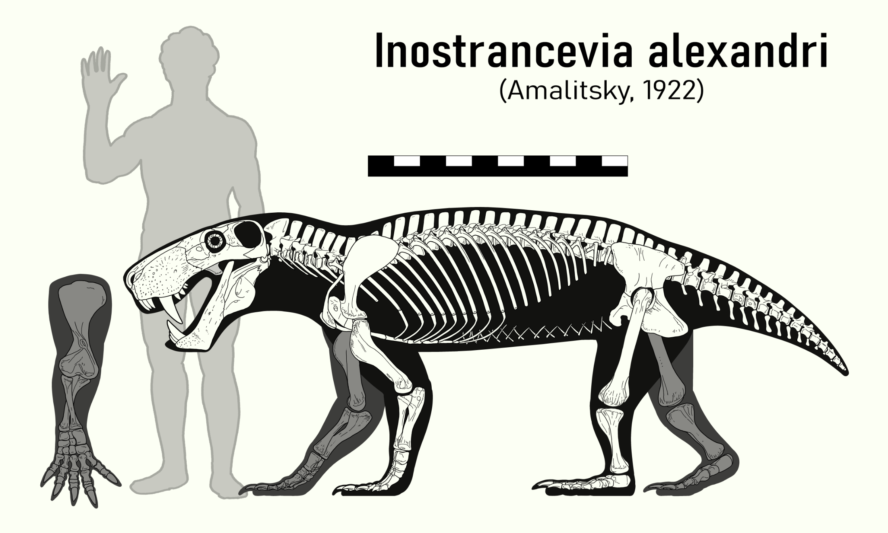
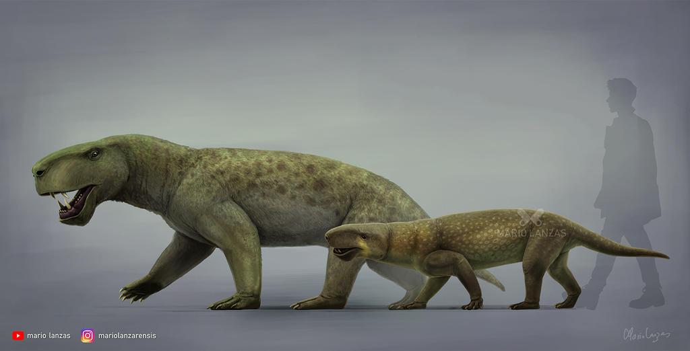

During the last million years of the Permian Period, Earth experienced one of the most hostile periods for living beings. Intense volcanic activity filled the atmosphere with greenhouse effect gases, slowly poisoning the planet and it's inhabitants. Only the toughest creatures clung to survival, and a group of saber-toothed therapsids became the most vicious animals the world had ever seen.
It was also during this time that the synapsids, a group of early amniotes more closely related to mammals than to lizards, thrived. A specific group evolved to become the apex predators of Pangea, the gorgonopsids.
Inostrancevia was a large carnivorous therapsid that lived between 259 and 251.9 million years ago in what was known as the Late Permian and fossils have been found in Russia and South Africa. As of this writing, there are four recognized species of Inostrancevia. Inostancevia possesed a robust morphology, and like many of it's relatives, it had a robust skeleton, but quite long limbs, giving it a posture similar to that of a dog, only with its elbows pointing outwards. It is still unkown if these animals were covered on hair or not.
Based on the specimens of I. alexandri (PIN 2005/1578, PIN 1758), which are some of the largest and most complete fossils of this animal, are estimated to measure three meters in length, with their skulls measuring 50 cm. However these estimations pale in comparison to I. latifrons size. Although it is known from more fragmentary material (PIN 1856), it's skull is 60 cm long, indicating it possibly had a length of 3.5m
The very first fossils of this enigmatic creature were found by Vladimir Amalitsky, on 1890. The fossils were found by some freshwater sediments dating all the way back to the Late Permian.
